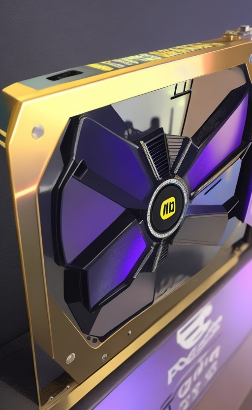
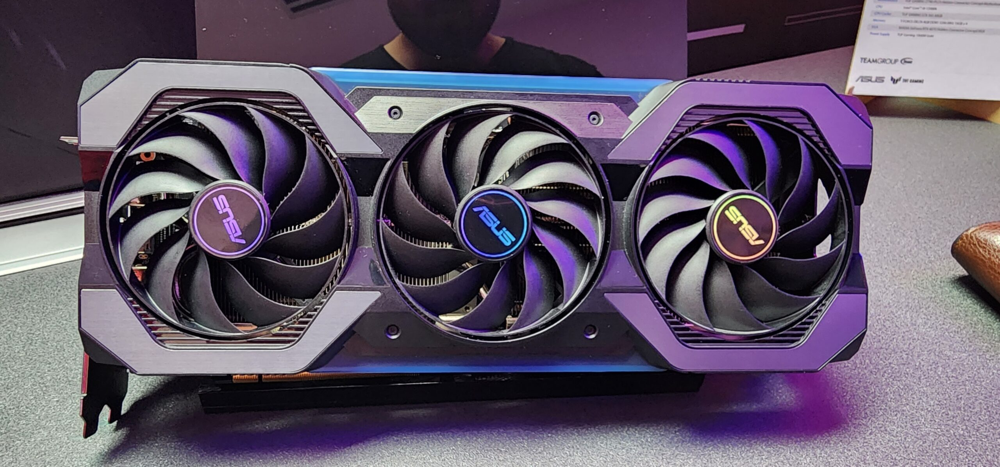
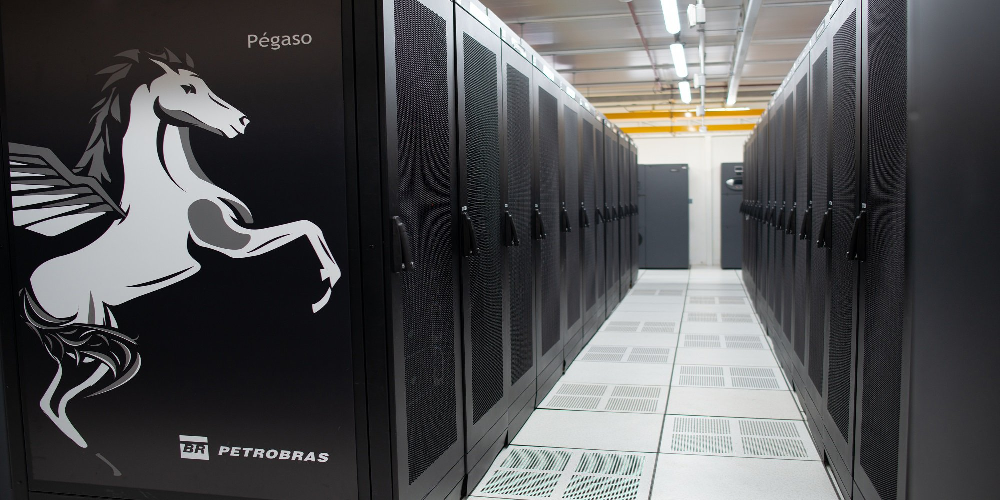
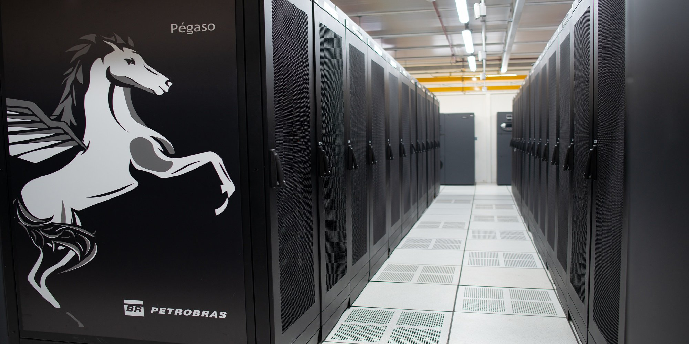

Índice
Introdução
A GPU (Graphics Processing Unit), ou Unidade de Processamento Gráfico, desempenha um papel fundamental no processamento gráfico e na computação paralela. Originalmente desenvolvida para acelerar o processamento de gráficos em computadores e dispositivos eletrônicos, a GPU evoluiu para se tornar uma poderosa ferramenta de processamento paralelo utilizada em uma variedade de aplicações além dos gráficos.
No processamento gráfico, a GPU é responsável por realizar cálculos intensivos necessários para gerar imagens em tempo real. Ela processa e renderiza elementos gráficos, como polígonos, texturas, sombras, iluminação e efeitos visuais, permitindo a exibição de gráficos complexos e realistas em jogos, animações, simulações e aplicativos de design.
Além disso, a GPU desempenha um papel crucial na computação paralela. Devido à sua arquitetura altamente paralela, com centenas ou milhares de núcleos de processamento, a GPU pode executar simultaneamente várias tarefas independentes. Isso a torna ideal para aplicações que requerem cálculos intensivos e paralelizáveis, como aprendizado de máquina, inteligência artificial, simulações científicas, mineração de dados e renderização em tempo real.
A capacidade de processamento paralelo da GPU é alcançada por meio de APIs (Application Programming Interfaces) como CUDA (Compute Unified Device Architecture) da NVIDIA e OpenCL (Open Computing Language), que permitem que os desenvolvedores programem a GPU para executar tarefas computacionais complexas. Essas APIs fornecem acesso direto aos recursos da GPU e aproveitam sua arquitetura paralela, permitindo a execução de algoritmos de alto desempenho e acelerando o tempo de processamento.
O que é uma GPU?
Uma GPU (Graphics Processing Unit) ou Unidade de Processamento Gráfico é um tipo de processador especializado no processamento de gráficos e imagens em tempo real. Ela é projetada para executar cálculos em paralelo, lidar com tarefas gráficas complexas e acelerar o processamento de dados visualmente intensivos.
 A GPU possui uma arquitetura altamente paralela, composta por centenas ou até mesmo milhares de núcleos de processamento, chamados de shader cores ou stream processors. Esses núcleos trabalham em conjunto para executar cálculos simultâneos em grandes conjuntos de dados, o que proporciona um desempenho superior em comparação com a CPU (Central Processing Unit).
Enquanto a CPU é projetada para executar uma ampla variedade de tarefas de propósito geral, a GPU se destaca no processamento de dados altamente paralelizáveis, como renderização gráfica, simulações físicas, aprendizado de máquina e mineração de criptomoedas. A GPU é capaz de manipular grandes quantidades de dados simultaneamente, executando operações aritméticas e lógicas em paralelo, o que a torna ideal para lidar com tarefas que podem ser divididas em pequenas partes independentes.
As principais diferenças entre CPU e GPU são:
Arquitetura: A CPU possui poucos núcleos de processamento (geralmente de 2 a 64), projetados para executar tarefas complexas e sequenciais. Já a GPU possui centenas ou milhares de núcleos de processamento, otimizados para executar tarefas paralelas em massa.
Propósito: A CPU é responsável por executar uma ampla variedade de tarefas, incluindo processamento geral do sistema, gerenciamento de memória e execução de programas. A GPU é especializada no processamento gráfico, mas também é utilizada em aplicações de computação paralela.
Desempenho: Devido à sua arquitetura paralela, a GPU pode processar grandes quantidades de dados simultaneamente e executar cálculos em massa com eficiência. Isso resulta em um desempenho significativamente superior em tarefas altamente paralelizáveis, em comparação com a CPU.
As principais fabricantes de GPUs são NVIDIA e AMD. A NVIDIA é conhecida por suas GPUs da série GeForce, que são amplamente utilizadas em jogos, computação de alto desempenho e inteligência artificial. A AMD produz GPUs da série Radeon, que também são populares em jogos e aplicações profissionais, como edição de vídeo e renderização 3D. Ambas as fabricantes têm um histórico de lançamento de GPUs com melhorias de desempenho e recursos avançados para atender às demandas dos usuários.
Componentes internos de uma GPU
As GPUs (Graphics Processing Units) são compostas por uma série de componentes internos que desempenham papéis específicos no processamento gráfico e na computação paralela. Alguns dos principais componentes internos de uma GPU incluem:
Arquitetura e design da GPU: As GPUs são projetadas com uma arquitetura específica que otimiza o processamento paralelo e o desempenho gráfico. Existem várias arquiteturas de GPU, como a arquitetura NVIDIA Turing e a arquitetura AMD RDNA, cada uma com suas características e recursos exclusivos.
Unidades de processamento e pipelines: As GPUs possuem várias unidades de processamento que realizam as operações necessárias para processar os dados gráficos ou executar tarefas de computação paralela. Essas unidades de processamento são organizadas em pipelines, que são responsáveis por executar etapas específicas do processamento gráfico, como geometria, rasterização, shading e saída na tela.
Memória da GPU e hierarquia de cache: As GPUs possuem sua própria memória dedicada, conhecida como memória de vídeo, que é usada para armazenar texturas, buffers e outros dados gráficos. Além disso, as GPUs possuem uma hierarquia de cache, que inclui caches L1, L2 e possivelmente L3, projetados para reduzir a latência e aumentar o desempenho ao acessar dados frequentemente utilizados.
Esses componentes internos trabalham em conjunto para executar tarefas de processamento gráfico e computação paralela de maneira eficiente. A arquitetura e o design da GPU determinam sua capacidade de processamento, enquanto as unidades de processamento e os pipelines realizam as operações necessárias. A memória da GPU e a hierarquia de cache garantem o acesso rápido aos dados, otimizando o desempenho global da GPU.
Para obter informações mais detalhadas sobre os componentes internos de uma GPU e sua arquitetura específica, recomenda-se consultar documentações técnicas fornecidas pelos fabricantes de GPUs, como a NVIDIA e a AMD. Além disso, livros e artigos acadêmicos sobre arquitetura de GPUs também podem fornecer informações mais aprofundadas sobre o assunto.
Aplicações da GPU
As GPUs (Graphics Processing Units) têm uma ampla gama de aplicações devido à sua capacidade de processamento paralelo e desempenho gráfico. Algumas das principais aplicações da GPU são:
Processamento Gráfico: As GPUs são amplamente utilizadas na indústria de jogos para renderizar gráficos 3D em tempo real, proporcionando uma experiência visual imersiva aos jogadores. Além disso, elas são usadas na renderização de imagens e vídeos em áreas como animação, produção cinematográfica e design gráfico.
Computação Paralela: A capacidade de processamento paralelo das GPUs as torna ideais para acelerar algoritmos científicos e computacionalmente intensivos. Tarefas como simulações físicas, modelagem climática, análise de dados e criptografia se beneficiam do poder de processamento das GPUs, permitindo cálculos mais rápidos e eficientes.
Inteligência Artificial e Deep Learning: Com o crescimento da inteligência artificial e do deep learning, as GPUs se tornaram peças fundamentais no treinamento de redes neurais profundas. O treinamento de modelos de machine learning requer grande capacidade de processamento e paralelismo, o que as GPUs oferecem. Elas aceleram o treinamento de redes neurais, permitindo que algoritmos de aprendizado de máquina processem grandes quantidades de dados em um tempo menor.
Além dessas aplicações, as GPUs também são utilizadas em áreas como visualização médica, pesquisa científica, modelagem e simulação, mineração de criptomoedas, entre outras.
É importante destacar que o desenvolvimento de software para aproveitar totalmente o potencial da GPU requer o uso de APIs e frameworks adequados, como CUDA (Compute Unified Device Architecture) da NVIDIA e OpenCL (Open Computing Language). Essas ferramentas permitem que os desenvolvedores aproveitem o poder de processamento das GPUs de maneira eficiente e otimizada para suas aplicações específicas.
Exemplo: Pegasus - O Maior Computador da América Latina
 

O Pegasus é considerado o maior computador da América Latina e desempenha um papel crucial no avanço da computação de alto desempenho na região. Ele foi desenvolvido e está localizado no Laboratório Nacional de Computação Científica (LNCC), no Brasil.
O Pegasus é um supercomputador que utiliza GPUs como parte fundamental de seu sistema. Sua importância no cenário latino-americano reside na capacidade de processamento de alto desempenho que oferece, permitindo a realização de pesquisas científicas avançadas, simulações complexas e análises de dados em larga escala.
Em termos de especificações técnicas, o Pegasus possui várias GPUs que trabalham em conjunto para realizar cálculos intensivos. A GPU utilizada no Pegasus é uma das principais responsáveis por sua alta capacidade de processamento paralelo e desempenho excepcional. Ela é projetada para lidar com cargas de trabalho complexas e exigentes, aproveitando a arquitetura paralela para acelerar algoritmos e processar grandes volumes de dados de maneira eficiente.
As aplicações e projetos desenvolvidos no Pegasus são abrangentes e abrangem uma ampla gama de áreas de pesquisa. Entre eles, estão:
Simulações científicas: O Pegasus é utilizado para realizar simulações científicas em diversas áreas, como física, química, biologia e engenharia. Essas simulações permitem o estudo de fenômenos complexos e a compreensão de sistemas naturais em diferentes escalas.
Análise de dados e big data: Com sua capacidade de processamento paralelo, o Pegasus é capaz de lidar com grandes volumes de dados e realizar análises complexas. Isso é especialmente útil em áreas como bioinformática, análise genômica, análise de dados climáticos e estudos de mercado.
Modelagem e previsão: O Pegasus é utilizado para modelagem e previsão em diversas áreas, incluindo meteorologia, previsão de terremotos, análise de tráfego e otimização de sistemas complexos. Ele permite a realização de cálculos intensivos em tempo real, fornecendo informações valiosas para tomada de decisões.
Pesquisa em inteligência artificial: Com a crescente importância da inteligência artificial, o Pegasus é usado para treinamento e otimização de modelos de aprendizado de máquina. Isso inclui o desenvolvimento de algoritmos de reconhecimento de padrões, processamento de linguagem natural, visão computacional e muito mais.
O Pegasus representa um marco significativo na capacidade de processamento da América Latina e impulsiona a pesquisa científica e a inovação em diversas áreas. Ele fornece aos pesquisadores e cientistas uma ferramenta poderosa para realizar cálculos complexos e avançar o conhecimento científico na região.
Conclusão
A GPU desempenha um papel fundamental na atualidade e tem um impacto significativo em diversas áreas, impulsionando avanços tecnológicos e transformando a maneira como realizamos certas tarefas. Algumas das principais razões pelas quais a GPU se tornou tão importante são:
Processamento Gráfico Avançado: As GPUs revolucionaram a indústria de jogos e entretenimento, proporcionando gráficos realistas e imersivos. Elas são capazes de processar e renderizar rapidamente imagens, vídeos e efeitos visuais complexos, proporcionando uma experiência visual impressionante.
Computação Paralela: As GPUs são altamente eficientes no processamento paralelo, permitindo que várias tarefas sejam executadas simultaneamente. Isso é especialmente importante em áreas como ciência, engenharia e finanças, onde cálculos complexos e intensivos podem ser acelerados significativamente usando a capacidade de processamento massivo das GPUs.
Aprendizado de Máquina e Inteligência Artificial: Com o crescimento da inteligência artificial e do aprendizado de máquina, as GPUs desempenham um papel crucial no treinamento e na execução de modelos de IA. Os algoritmos de aprendizado de máquina exigem um grande poder de processamento e as GPUs são capazes de processar grandes volumes de dados e realizar cálculos intensivos necessários para treinar e otimizar esses modelos.
Ciência e Pesquisa: A GPU tem sido amplamente adotada em áreas científicas e de pesquisa para acelerar simulações computacionais, análises de dados complexos e modelagem de sistemas. Elas ajudam a resolver problemas científicos em áreas como física, biologia, química, astronomia e muitas outras, permitindo a realização de pesquisas avançadas e descobertas científicas.
Quanto ao potencial futuro das GPUs e às tendências tecnológicas, espera-se que elas continuem a evoluir e desempenhar um papel ainda mais importante em várias áreas. Algumas tendências e direções em potencial incluem:
Maior Potência de Processamento: As GPUs continuarão a evoluir, oferecendo um poder de processamento cada vez maior. Isso permitirá a execução de tarefas ainda mais complexas e acelerará ainda mais as aplicações de computação paralela, IA e processamento gráfico.
Integração com Tecnologias Emergentes: As GPUs podem ser combinadas com outras tecnologias emergentes, como realidade virtual, realidade aumentada e computação em nuvem, para criar experiências imersivas e soluções inovadoras em diversos setores, como jogos, medicina, arquitetura e educação.
Expansão para Dispositivos Móveis: Com o aumento da demanda por gráficos avançados e aplicativos de IA em dispositivos móveis, espera-se que as GPUs se tornem cada vez mais presentes em smartphones e tablets, permitindo experiências visuais e de processamento intensivas em dispositivos portáteis.
Avanços em Eficiência Energética: A eficiência energética das GPUs continuará a melhorar, permitindo um desempenho mais poderoso com menor consumo de energia. Isso é crucial para dispositivos móveis, centros de dados e aplicações que exigem alto desempenho, mas também buscam reduzir o consumo de energia e a pegada ambiental.
Em resumo, a GPU desempenha um papel crucial na atualidade, impulsionando avanços em áreas como jogos, computação paralela, inteligência artificial, ciência e pesquisa. Com seu potencial futuro e as tendências tecnológicas, espera-se que as GPUs continuem a evoluir e a impactar positivamente diversas indústrias, impulsionando a inovação e a transformação digital.
Referências
ALECRIM, Emerson. Placa de Vídeo e GPU: principais características. Infowester, 2011. Disponível em: infowester.com. Acesso em: 16/06/2023.
Análise Genômica Acelerada. NVIDIA. Disponível em: nvidia.com/. Acesso em: 16/06/2023.
MATOS, David. GPU e Deep Learning. Ciência e Dados, 2016. Disponível em: cienciaedados.com. Acesso em: 16/06/2023.